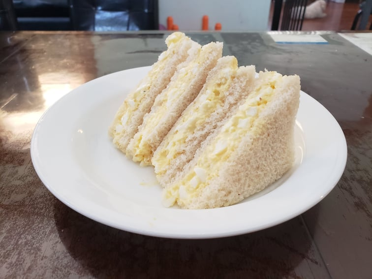

Tamago Sando (Japanese Egg Sandwich)

Ingredients:
- 3 Large eggs, hard-boiled
- 1/4 tsp Sugar
- 1/4 tsp Salt
- Black pepper, freshly ground, to taste
- 2 tsp Milk
- 2 tbsp Kewpie mayonnaise
- 4 slices Shokupan, or any white bread
Instructions:
- To boil the eggs, put the eggs in a medium saucepan and pour water till it covers the eggs by an inch. Bring it to boil on medium heat and once boiling, remove from heat, cover, and let rest for 10 minutes. Then, remove the eggs from the saucepan and place into ice water. Peel the eggs.
- Transfer the peeled eggs in a bowl and mash with a fork into small pieces. Mix in the sugar, salt, pepper, milk, and mayonnaise.
- Spread the butter onto the slices of bread and evenly distribute the egg salad on one slice per sandwich.
- Close each sandwich. Stack them on top of each other place inbetween two plates. Set aside for 5 minutes.
- Remove the plates. Cut off the crust and cut diagonally.